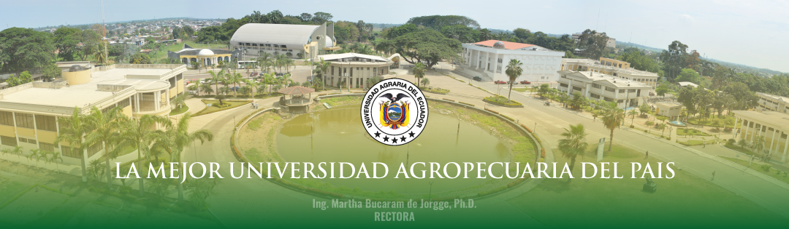

NUESTRAS REVISTAS CIENTÍFICAS
La Revista Científica de la Universidad Agraria es el principal órgano de divulgación para investigaciones originales que contribuyen al avance de las ciencias agrarias, ambientales y pecuarias en la región.
Enviar Artículo


COMPROMISO CON LA EXCELENCIA CIENTÍFICA
Fomentamos la divulgación del conocimiento y la innovación generada por nuestros investigadores. Este portal es una ventana abierta al impacto de la ciencia agraria en la región y el mundo.
Proceso Editorial Transparente y Riguroso
Todas nuestras publicaciones siguen un estricto proceso de revisión por pares (peer review), garantizando la calidad, originalidad y validez de cada artículo. Nuestro comité editorial está comprometido con las buenas prácticas y la ética en la publicación científica.

Edición Especial: Sostenibilidad en la Producción Agraria
Nuestras revistas invitan a la comunidad científica a someter artículos originales e inéditos para una edición especial enfocada en los desafíos y avances de la sostenibilidad en el sector agrario. Buscamos trabajos que aporten nuevas perspectivas y soluciones innovadoras.
MÁS INFORMACIÓN